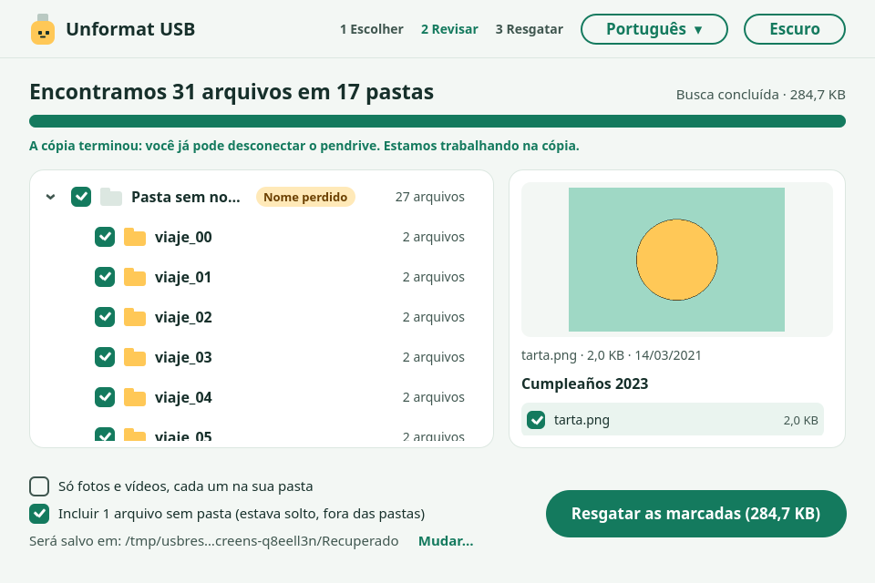
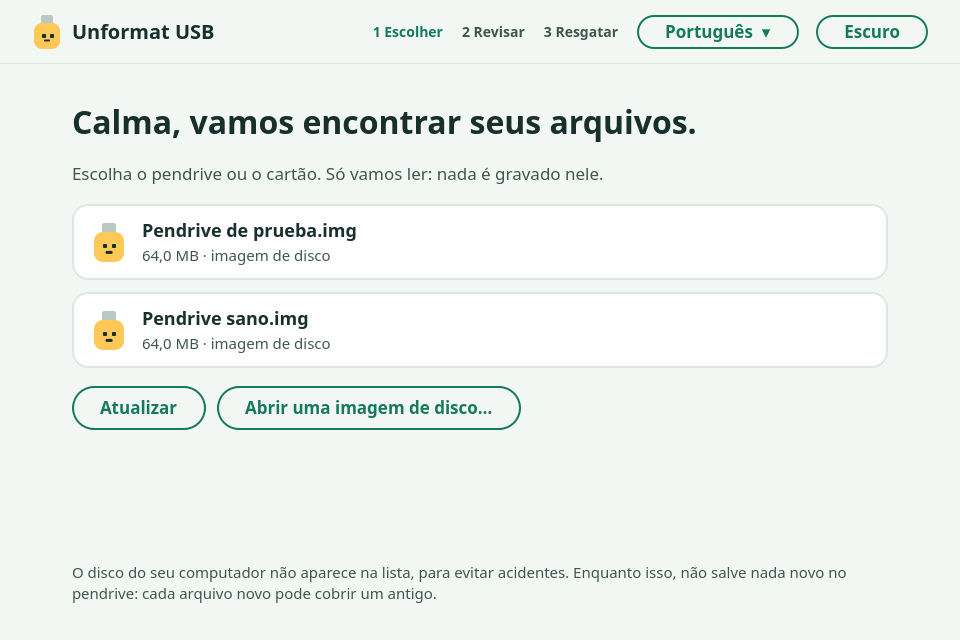
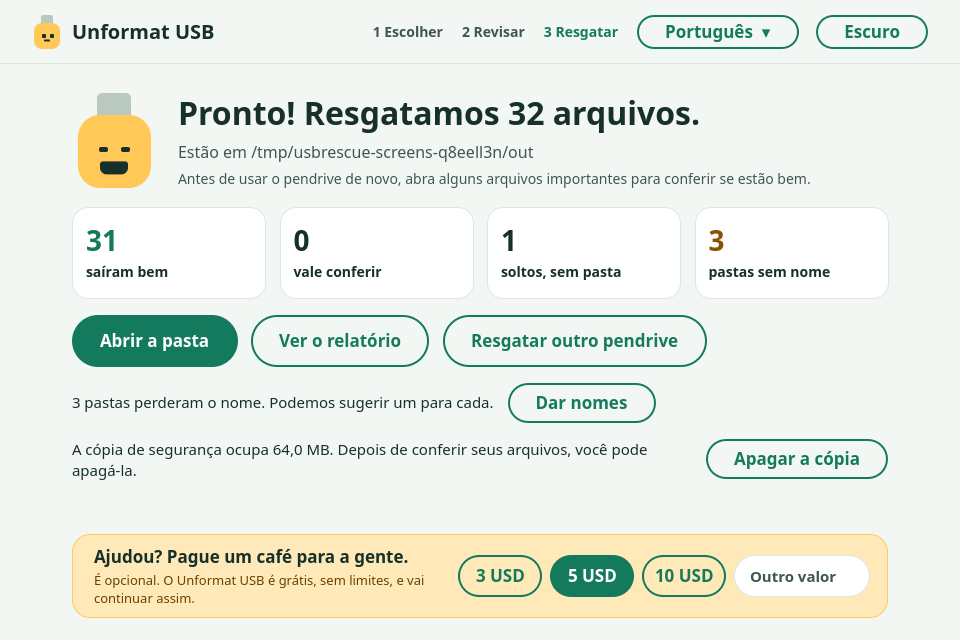
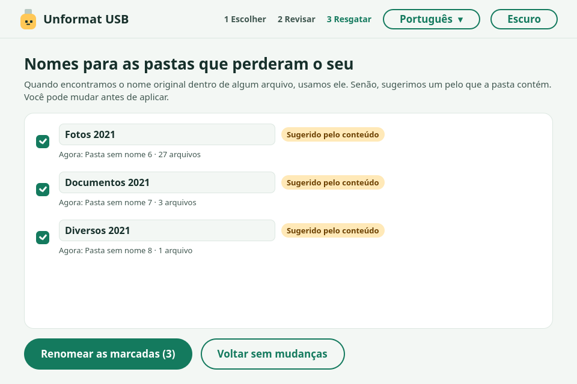

Formatou seu pendrive por engano?
Provavelmente seus arquivos ainda estão aí. O Unformat USB encontra e recupera tudo com as pastas. Grátis, sem limites, e nunca grava nada no pendrive.
Versão 0.1.0 · português, espanhol e inglês · ainda sem assinatura: o Windows pode mostrar um aviso, escolha Mais informações → Executar assim mesmo. Linux →

Primeiro, antes de tudo
- Pare de usar o pendrive. Não copie nada novo: cada arquivo novo pode cobrir um antigo.
- Não formate de novo e não deixe um programa “consertar” o pendrive.
- Deixe desconectado até ter o programa pronto.
Como funciona
- 1
Escolha o pendrive
Só aparecem pendrives e cartões externos, assim você não escolhe o disco do computador por engano.
- 2
Veja as pastas aparecerem
Mostra o que encontra enquanto procura, com prévia. Marque o que quiser.
- 3
Resgate
Os arquivos são copiados para o seu computador, nunca para o próprio pendrive.
O que ele faz
Reconstrói suas pastas
Com nomes e conteúdo originais, incluindo vídeos grandes guardados em pedaços.
Grátis de verdade
Sem limite de 100 MB ou 500 MB, sem teste, sem conta. Recupere tudo.
Só leitura
Nunca grava, conserta ou formata o pendrive, e não deixa salvar o resgate nele.
Modo seguro
Primeiro copia o pendrive inteiro para o computador e trabalha na cópia. Ideal se o pendrive estiver falhando.
Arquivos soltos também
Os que estavam fora das pastas voltam com nome pelo conteúdo (a data de uma foto, o título de um documento).
Dá nome a pastas perdidas
Sugere um nome para as pastas que perderam o seu. Você aprova, e dá para desfazer.
Só fotos e vídeos
Com uma marca, você recupera só suas fotos e vídeos, cada um na sua pasta.
Privado
Funciona sem internet. Não envia nada sobre você ou seus arquivos.
Por dentro



Quando não dá para ajudar
Para ser claro: depois de uma formatação completa (grava zeros em tudo), de muito uso do pendrive depois de formatar, ou em um SSD/NVMe (o sistema apaga sozinho o espaço livre), pode não sobrar nada. O Unformat USB avisa em vez de prometer o que não pode. Funciona com exFAT e FAT32, os formatos de quase todos os pendrives e cartões; NTFS ainda não.
Perguntas
Dá para recuperar arquivos depois de formatar um pendrive?
Normalmente sim. A formatação rápida, a padrão do Windows, macOS e Linux, só apaga o índice. Os arquivos continuam no lugar até algo novo ser gravado por cima.
É grátis mesmo?
Sim. Sem limites, sem teste, sem anúncios no programa. É código aberto (GPL-3.0). Se ajudar, você pode pagar um café para a gente, mas não é obrigatório.
Funciona com cartões SD e microSD?
Sim, com qualquer cartão ou pendrive em exFAT ou FAT32, usando um leitor ou adaptador.
Pode danificar meu pendrive?
Não. Ele só lê. Nunca grava, conserta ou formata o pendrive, e não salva os arquivos resgatados no mesmo pendrive.
Por que o Windows pede permissão de administrador?
Para ler o pendrive inteiro, por baixo dos arquivos, é preciso. É o único motivo.
O Windows diz “O Windows protegeu o computador”. É seguro?
O programa ainda não tem assinatura (o certificado está a caminho). Escolha “Mais informações” e “Executar assim mesmo”. O código é público e cada versão é compilada e testada automaticamente no GitHub.
Ajudou?
O Unformat USB é grátis e vai continuar assim. Se recuperou seus arquivos, você pode pagar um café para a gente.